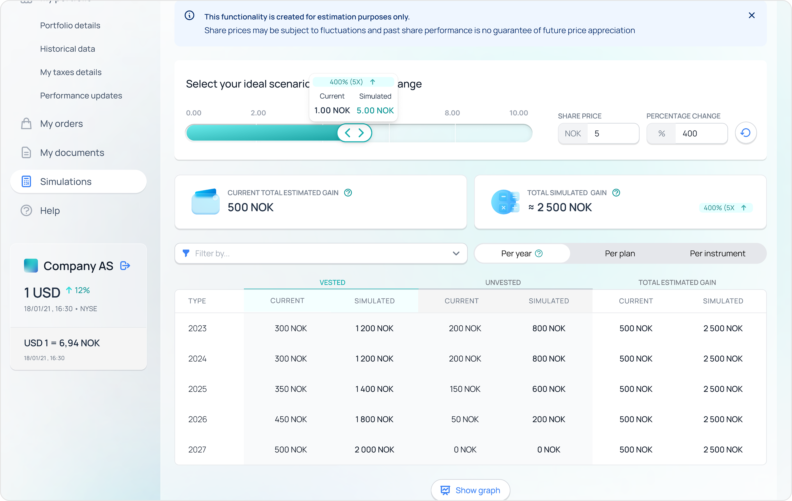
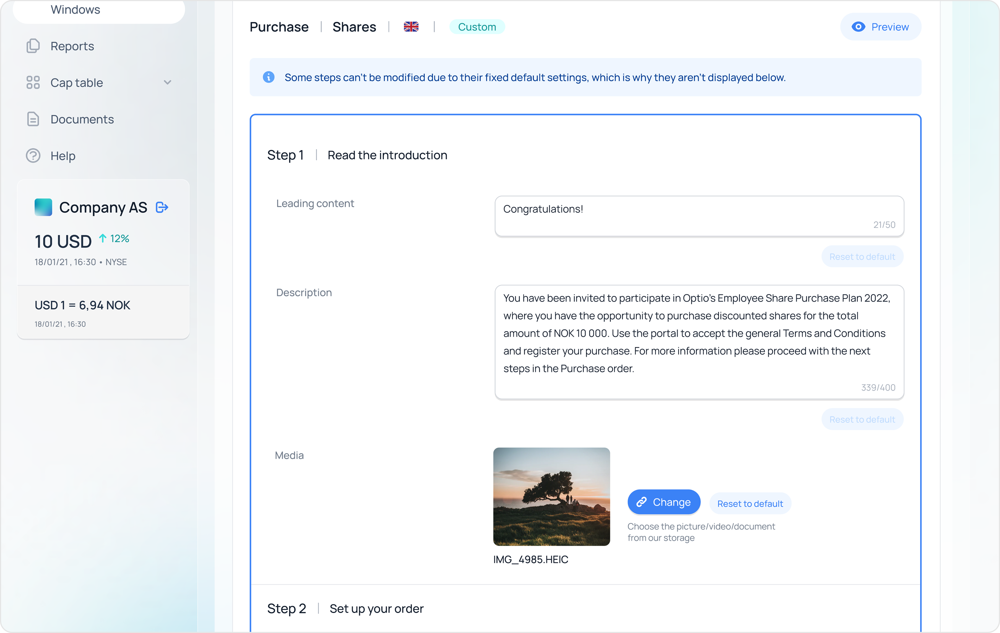
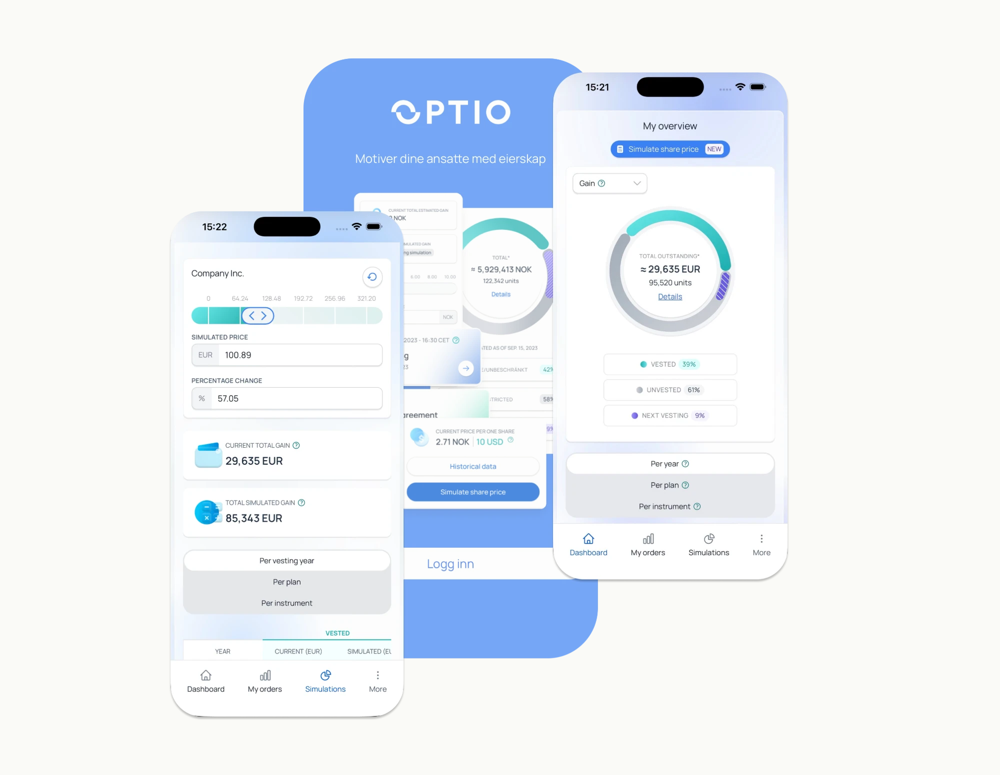

The dashboard, reorganised around two questions: what do I have right now, and what should I do next.
Optio Incentives · 2022 — 2024
Redesigning a portal employees only open twice a year, around the two questions they actually ask
Years2022 — 2024in parallel with Financial Reporting (2023 — 2025)
CompanyOptio Incentives
My roleProduct Designer · UX end-to-end
In one lineMade the portal answer two questions instead of demanding people learn its vocabulary.
01 · Problem
A portal built for stock options only — that had to start serving everyone
When I joined, the portal was mid-implementation — built essentially for stock options only, and the company was going through a major redesign. As more share types, markets and company-specific rules got added, the experience started to crack. Risky actions felt unsafe. People couldn't see a clear picture of what they actually owned.
And we had almost no direct insight from the people using it. Most opened the portal twice a year — once when something unlocked, once at tax time — and landed back inside a tool they only half-remembered. The screens treated every visit like the user already knew the language.
The rule I designed against
“If a piece of the UI doesn't help with what do I have or what should I do, it doesn't earn its space.”
02 · The insight the whole dashboard was built on
The same two questions opened almost every session
Research wasn't one big study — it was a steady drip of small ones. Card sorting, prototype tests on desktop and mobile, moderated and unmoderated sessions, a Lean UX canvas to sanity-check assumptions, and the in-portal feedback widget that ran continuously. Most of it confirmed what the team already suspected.
One pattern kept showing up, and it changed how I designed everything else. People open the portal infrequently. Almost every session starts with the same two questions: what do I have right now, and what should I do next?
The Lean UX canvas the team aligned on — users, hypotheses, the most important thing to learn first, and the outcomes we'd track.
03 · What I did
Four decisions, all of them downstream of the two questions
Problem reframed
One configurable dashboard that adapts to whatever someone actually holds
The original Dashboard was designed only for options. As the platform evolved to support RSUs, PSUs, warrants and shares, the UI broke down and didn't match how different instruments behave. I redesigned the Dashboard so it adapts to whatever instruments the employee actually holds, not just options.
Strategic
Pulled the share-price simulator out of the dashboard
It used to live as a small decorative widget. I gave it its own page with a slider, so people could actually answer: what happens if the price goes up or down.

Decision
A content + theming system clients can configure themselves
Some clients wanted their own branding, wording and process variations without turning the portal into a one-off for every company. I created a custom content and wording system so clients can localise tone, labels and explanations without losing consistency. And worked on brand theming so the portal can adopt each company's primary colours and key assets while still using a shared design system.

Built unprompted
Mobile-ready by default — no separate mobile track
Mobile was low priority at the start. I used components that were easy to adapt anyway. When the portal was later integrated into the mobile app, the design was already structured for smooth adoption — the rollout shipped meaningfully faster.

Behind the decisions
The work the decisions sat on top of
The action flows — same principle for every move: clear state, validation, preview before commit.
Moderated and unmoderated rounds — internal and external — comparing variants side by side.
The final usability pass before implementation — to validate flows and copy in real conditions.
04 · An opportunity I spotted
A direct line from users to designers, built into the product
Most product teams hear from their users through Customer Success, support tickets and quarterly surveys — a long chain with a lot of filtering. I argued the portal could host its own listening tool. A small in-product feedback widget, owned by design, with replies routed to the same place we already wrote tickets.
It was a small build with an outsized payoff. Inside two months we had qualitative data we couldn't get any other way — at the moment of an action, in the user's own words, in Norwegian and English.
The in-portal widget — placed next to the action, so the question reached the team in context.
Real submissions in users' own words — in Norwegian and English, dated through 2024.
05 · A business-judgment moment
Keeping the biggest client by shrinking what we shipped
One of the dashboard's unresolved frictions mattered to a single client — Optio's largest, with a contract on a slow simmer of frustration. They'd been asking us to address it for months, and they had started talking like a customer with options.
I ran direct interviews and a round of testing with their participants, agreed on a direction with engineering, and we were ready to implement. Then the request landed: pause. Other projects had taken priority for the quarter.
That pause was the actual risk. Telling the biggest client “not this quarter either” would have ended a multi-year relationship over a problem they'd already explained three times. I worked with our Product Owner to break the implementation into smaller, shippable slices and presented it at the quarterly OKR review.
The proposal: ship the parts that solved the client's pain inside releases we'd already committed to, defer the rest, keep the roadmap honest. Leadership agreed. The new dashboard rolled out in chunks across the following quarters. The client stayed.
06 · A trade-off I'd make differently today
I tested the structure with internal teammates because they were faster to schedule
Internal teammates grouped the words by share type — options together, RSUs together. Real users, when we eventually ran the same exercise with them, grouped by what was happening in their life — what happens when I leave, what happens at tax time. The version we shipped is the users' version. The earlier round cost us about three weeks I wouldn't spend that way again.
Card sorting results — the version that won at 62.7% success was the users' grouping, not the internal one.
07 · Impact
A configurable portal, a direct line to users, a client retained
Product
1 view · 5 types
One configurable dashboard replaced five program-specific layouts. Six high-stakes action flows shipped with previews, validation and clear states.
Process
Sept '24
The product's strongest month for positive feedback in Mixpanel after the dashboard launched — the in-product feedback widget made the signal possible.
People
1 client kept
The biggest client stayed through a quarter where the original roadmap would have lost them. Customer Success spends less time chasing terminology.
User feedback over time — happy / neutral / sad signals through 2024. September was the strongest month the product had recorded.
Brought back to the team
KO
“Huge kudos to Anastasiia! Your willingness to engage in explanations, discussions, and being open to suggestions in everyday work is commendable.”
Kasia Osinska · Engineer, Participant portal team · 31 May 2024